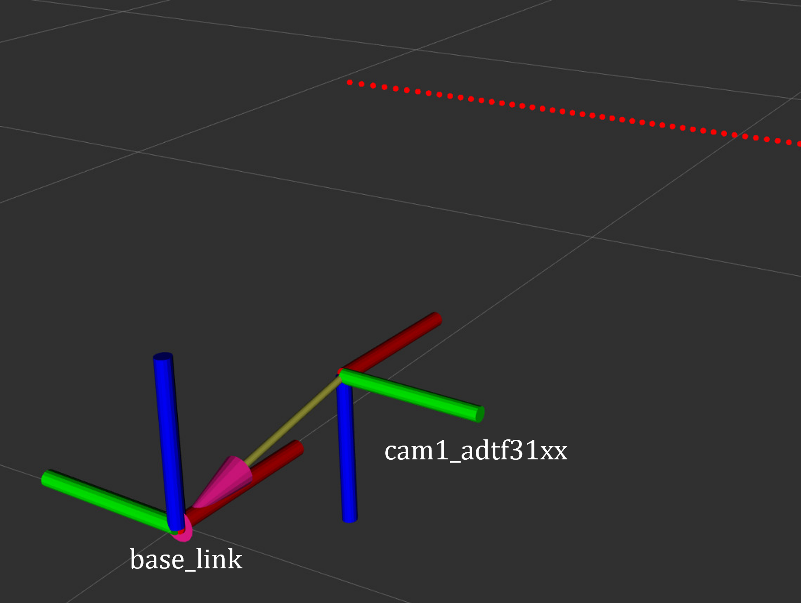

AD-R1M ROS2 Architecture
Overview
The AD-R1M ROS2 architecture enables the autonomous robot system, integrating CANOpen motor control, ADI Time-of-Flight (ToF) camera, IMU, and the ROS2 Navigation2 stack for 2D localization and navigation.
System Architecture
%%{init: {'theme': 'base', 'themeVariables': { 'primaryColor': '#4a90d9', 'primaryTextColor': '#ffffff', 'primaryBorderColor': '#2d5a8a', 'secondaryColor': '#82c341', 'tertiaryColor': '#f5a623', 'background': '#ffffff', 'mainBkg': '#4a90d9', 'nodeBorder': '#2d5a8a', 'clusterBkg': '#f0f4f8', 'titleColor': '#333333', 'lineColor': '#333333', 'edgeLabelBackground': '#ffffcc', 'textColor': '#000000', 'secondaryTextColor': '#000000'}}}%%
graph TD
subgraph Sensors["🔵 Sensors"]
B[IMU<br/>ADIS16470]
C[ToF Camera<br/>ADTF3175D]
E[Remote Control<br/>CRSF]
end
subgraph Processing["🟢 Processing"]
D[Depth to LaserScan]
F[Robot Localization<br/>EKF]
H[Command Multiplexer<br/>twist_mux]
end
subgraph Navigation["🟠 Navigation"]
I[Nav2 AMCL]
G[Navigation Stack<br/>Nav2]
end
subgraph Actuation["🔴 Actuation"]
A[Drive System<br/>diff_drive_controller]
K[Lift Server]
end
subgraph Control["🟣 High-Level Control"]
J[Demo Commander]
end
B -->|/imu| F
C -->|/cam1/depth_image| D
D -->|/cam1/scan| I
F -->|/odom_filtered| G
E -->|/cmd_vel_joy| H
G -->|/cmd_vel_nav| H
H -->|/cmd_vel| A
A -->|/odom| F
I -->|/amcl_pose| G
I -->|/amcl_pose| J
J -->|/goal_pose| G
G -->|/feedback| J
G -->|/status| J
K <-->|/lift_cmd, /lift_state| J
style B fill:#4a90d9,stroke:#2d5a8a,stroke-width:2px,color:#fff
style C fill:#4a90d9,stroke:#2d5a8a,stroke-width:2px,color:#fff
style E fill:#4a90d9,stroke:#2d5a8a,stroke-width:2px,color:#fff
style D fill:#82c341,stroke:#5a8a2d,stroke-width:2px,color:#fff
style F fill:#82c341,stroke:#5a8a2d,stroke-width:2px,color:#fff
style H fill:#82c341,stroke:#5a8a2d,stroke-width:2px,color:#fff
style I fill:#f5a623,stroke:#c4841c,stroke-width:2px,color:#fff
style G fill:#f5a623,stroke:#c4841c,stroke-width:2px,color:#fff
style A fill:#e74c3c,stroke:#c0392b,stroke-width:2px,color:#fff
style K fill:#e74c3c,stroke:#c0392b,stroke-width:2px,color:#fff
style J fill:#9b59b6,stroke:#7d3c98,stroke-width:2px,color:#fff
Components
Drive System and Odometry
- The robot uses multiple data sources for accurate positioning:
Motor encoders → /diff_drive_controller/odom
IMU measurements → /imu
Fused data → /odom (via robot_localization)
# Start the drive system (specify CAN interface)
ros2 launch ad_r1m_real just_motors.launch.py can_iface:=can0
- Launch arguments:
namespace: Robot namespace for multi-robot systems (default: ‘’, examples: robot1, robot2)can_iface: CAN interface name (default: can0)ekf_config_file: Path to EKF configuration file (default: ad_r1m_common/config/ekf.yaml)
# Multi-robot example with namespace
ros2 launch ad_r1m_real just_motors.launch.py namespace:=robot1 can_iface:=can0
This motor launch starts the following nodes:
- robot_state_publisher
Publishes the robot’s state (joint positions) to tf2
Computes forward kinematics and broadcasts the robot’s state
Loads robot description from
ad_r1m_real.urdf.xacroConfig:
URDF model generated from xacro with CAN interface and namespace parameters
Joint states from /joint_states topic
- controller_manager (ros2_control_node)
Core ROS2 control component that manages and coordinates robot controllers. controller_manager documentation
Loads and manages controller plugins
Config: reads from
ad_r1m_common/config/ros2_controllers.yamlcontaining:Controller configurations (diff_drive_controller)
Update rates
Controller interfaces
# Controller configuration in ros2_controllers.yaml
diff_drive_controller:
type: diff_drive_controller/DiffDriveController
ros__parameters:
publish_rate: 50.0
left_wheel_names: ['left_wheel_joint']
right_wheel_names: ['right_wheel_joint']
wheel_separation: 0.3
wheel_radius: 0.0675
enable_odom_tf: false # TF published by robot_localization (EKF)
For more details, see the diff_drive_controller documentation.
- joint_state_broadcaster_spawner
Spawns the joint state broadcaster controller
Publishes joint states from hardware interfaces to /joint_states topic
Managed by controller_manager
- diff_drive_controller_spawner
Spawns the differential drive controller
Manages controller lifecycle (configured → active)
Subscribes to velocity commands on /diff_drive_controller/cmd_vel_unstamped
Publishes odometry on /diff_drive_controller/odom
- robot_localization_node (ekf_filter_node)
Provides state estimation for robot pose using Extended Kalman Filter (EKF)
Fuses data from various sensors (IMU, odometry, etc.)
Config: Uses
ad_r1m_common/config/ekf.yamlcontaining:Sensor inputs and frame IDs
Covariance matrices
Update frequencies
State estimation parameters
- twist_mux
Command multiplexer node (see Remote Control Interface section below)
Combines multiple velocity command sources into single output
Note
The robot_localization node (ekf_filter_node) is configured to use the /diff_drive_controller/odom topic for odometry data, which is published by the diff_drive_controller. The EKF (Extended Kalman Filter) uses (X, Y) position, (X, Y) linear velocities, and Z angular velocity (vyaw):
odom0: /diff_drive_controller/odom
odom0_config: [true, true, false, # X, Y, Z position
false, false, false,
true, true, false, # X, Y linear velocities
false, false, true, # Z angular velocity (vyaw)
false, false, false]
Using diff_drive_controller Odometry Directly (Without EKF)
If you want to use the odometry published directly by the diff_drive_controller (without fusing with IMU data via the EKF), you can disable the robot_localization node and enable the TF transform in the controller:
- Disable the robot_localization_node
Create a custom launch file or modify just_motors.launch.py to comment out the robot_localization_node:
# Comment out or remove this node from the GroupAction # robot_localization_node,
- Enable odom → base_link transform in diff_drive_controller
In your
ad_r1m_common/config/ros2_controllers.yaml, setenable_odom_tf: truefor thediff_drive_controller:diff_drive_controller: ros__parameters: enable_odom_tf: true # true: publish odom->base_link tf (false when using EKF)
- Launch the drive system
Start the drive system as usual:
ros2 launch ad_r1m_real just_motors.launch.py can_iface:=can0
With this setup, the robot will use the odometry and TF published by the diff_drive_controller directly, without sensor fusion from the EKF.
CANOpen Motor Control Integration
The EVAL-ADRD3161 motor control platform uses CANOpen for robust, real-time motor and device communication. The CANOpen configuration is managed through YAML files in the config/motors directory. Device Configuration Files (DCFs) are generated using the cogen_dcf tool, which processes EDS files and outputs DCFs for each node.
A typical CANOpen master configuration (bus.yaml) includes:
Master node: Handles the CAN bus, synchronization, and node management.
Defaults: Common settings for all nodes (e.g., product code, heartbeat, PDO mappings).
Nodes: Individual device definitions (motors), each with unique node IDs and scaling factors.
Key options:
driver/package: Specifies the ROS2 CANOpen driver for each node.
PDO mappings: Define which CANOpen objects are exchanged in real time.
Scaling factors: Convert between device units and SI units for position/velocity.
A simplified example of such configuration:
master:
driver: "ros2_canopen::MasterDriver"
package: "canopen_master_driver"
defaults:
dcf: "adrd3161.eds"
driver: "ros2_canopen::Cia402Driver"
package: "canopen_402_driver"
nodes:
drive_left:
node_id: 0x16
drive_right:
node_id: 0x14
For detailed information on configuring CANOpen devices in ROS2, refer to the ROS2 CANopen Stack documentation and the ros2_canopen GitHub repository.
IMU (Inertial Measurement Unit)
The ADI IMU node publishes sensor data to the /imu topic using the following configuration:
# Launch the IMU node
ros2 launch ad_r1m_real just_imu.launch.py
- Launch arguments:
namespace: Robot namespace for multi-robot systems (default: ‘’, examples: robot1, robot2)frame_id: TF frame ID for the IMU sensor (default: ‘imu’, or ‘namespace/imu’ if namespace is set)
# Multi-robot example with namespace
ros2 launch ad_r1m_real just_imu.launch.py namespace:=robot1
- Parameters:
- iio_context_string: ‘ip:localhost’
Defines the connection method to the IMU device via Industrial I/O (IIO) framework
- measured_data_topic_selection: 2
Selects standard IMU message type for the /imu topic
Follows sensor_msgs/Imu format
- imu_device_name: ‘adis16470’
Specifies the ADIS16470 IMU device model
- diag_data_enable: false
If true, publishes diagnostic data
- ident_data_enable: false
If true, publishes identification data
frame_id: Frame ID for the IMU (dynamically set based on namespace)
For additional configuration details, refer to the adi_imu_ros2 documentation.
Note
The IMU node from the adi_imu_ros2 package publishes angular velocities and linear accelerations, but NOT orientation (Quaternion) data in the standard ROS2 sensor_msgs/Imu format. EKF (Extended Kalman Filter) is configured to use the IMU data for state estimation, see the ekf.yaml configuration file in the config directory:
imu0: /imu
imu0_config: [false, false, false,
false, false, false,
false, false, false,
false, false, true, # angular velocity in Z (vyaw)
true, true, false] # linear acceleration in X, Y
The imu_filter_madgwick node from the imu_tools can be used to fuse raw IMU data and compute orientation (Quaternion), publishing the result to /imu/data. The node subscribes to /imu/data_raw (containing angular velocities and linear accelerations) and outputs a standard sensor_msgs/Imu message with orientation. See this launch file for reference: imu_with_madgwick_filter.
The IMU is mounted to the robot using a fixed joint as defined in the URDF:
<joint name="imu_joint" type="fixed">
<parent link="base_link"/>
<child link="imu_link"/>
<origin xyz="0.133 -0.01 ${wheel_radius}" rpy="0 ${pi} ${-pi/2}"/>
</joint>
This means the IMU is positioned 0.133 m forward, -0.01 m to the left, and at the height of the wheel radius from the base_link (robot center at ground-level), with a rotation of (0, π, -π/2) radians.

IMU coordinate frame as mounted on the robot platform. The axes (see base_link) follow the ROS REP-103 convention: X (red) forward, Y (green) left, Z (blue) up.
Time-of-Flight Camera
ADI’s EVAL-ADTF3175D-NXZ ToF sensor is used in this AMR setup to provide depth perception. For this configuration, only depth images are published and used; amplitude (AB), confidence, and point cloud outputs are disabled. The node captures depth frames from the sensor using the ADI ToF SDK APIs and publishes them as ROS topics.
- Example Python launch code:
adi_3dtof_node = IncludeLaunchDescription( PythonLaunchDescriptionSource( os.path.join(pkg_3dtof_adtf31xx_dir, 'launch', 'adi_3dtof_adtf31xx_launch.py') ), launch_arguments={ "arg_enable_depth_publish": "True", # Enable depth image publishing for LaserScan conversion "arg_enable_ab_publish": "False", "arg_enable_conf_publish": "False", "arg_enable_point_cloud_publish": "False", "arg_input_sensor_mode": "0", # Input mode, `0:Real Time Sensor` "arg_input_sensor_ip": "127.0.0.1", "arg_encoding_type": "16UC1", # Encoding types `mono16` or `16UC1` }.items(), )
To start the ToF camera and convert depth images to LaserScan format, use the following launch command:
ros2 launch adrd_demo_ros2 just_tof.launch.py
Important: Run ~/Workspace/media_config_16D_16AB_8C.sh outside the container before starting the camera.
The camera system consists of two main components:
Camera Node (adi_3dtof_adtf31xx_node)
- Node parameters:
param_camera_link: ‘cam1_adtf31xx_optical’ - Camera optical frame ID
param_input_sensor_mode: 0 - Input mode (0: Real Time Sensor)
param_camera_mode: 3 - Camera operational mode
param_enable_depth_publish: true - Enable depth image publishing for LaserScan conversion
param_enable_ab_publish: true - Enable amplitude (AB) image publishing
param_enable_conf_publish: false - Disable confidence map publishing
param_enable_point_cloud_publish: true - Enable point cloud publishing
param_encoding_type: ‘16UC1’ - Encoding format (mono16 or 16UC1)
- Published topics:
/cam1/depth_image- Depth images (values in millimeters, format: 16UC1)/cam1/camera_info- Camera calibration (distortion model and intrinsic parameters)/cam1/ir_image- Amplitude (AB) image/cam1/point_cloud- 3D point cloud data
Depth to LaserScan Node
Publishes 2D laser scan data (
/cam1/scan)Converts depth images to LaserScan format
Uses camera calibration for accurate transformations
For detailed implementation and configuration, refer to the following resources:
Depth to LaserScan Parameters
Current parameters used ad_r1m_real/config/depth_to_laser_params.yaml:
/**:
depthimage_to_laserscan:
ros__parameters:
scan_time: 0.033
range_min: 0.3
range_max: 5.0
scan_height: 40 # image height x width = 512 x 512
scan_offset: 0.539062
output_frame: "cam1_scan"
The camera’s position relative to the robot base is defined in urdf/camera.xacro. Ensure the transform between cam1_adtf31xx and base_link frames is correctly specified for accurate sensor fusion and navigation.
{kind=link}

ToF Camera coordinate frame as mounted on the robot platform. For the current depth to LaserScan configuration, the camera is positioned at the front center of the robot chassis, slightly above the ground. The camera is rotated by π radians around the X-axis to align the Laser Scan with the robot’s forward direction, as required by the current depthimage_to_laserscan node.
The relevant URDF/Xacro snippet for the camera’s pose is:
<origin xyz="${chassis_length / 2} 0 0.055" rpy="${pi} 0 0" /> <!-- rotated for correct depthimage_to_laserscan alignment -->
Depth to LaserScan Git Versioning
The current version of the depthimage_to_laserscan package is based on the ros2 branch of the ros-perception repository, and includes features from the following pull requests:
Both PRs are merged into the ros2 branch of the currently used depthimage_to_laserscan forked repository.
Remote Control Interface
The CRSF Node is a ROS 2 node designed to interface with an CRSF transceiver, enabling remote control capabilities for robotic platforms. It integrates joystick input handling, battery telemetry, and safety killswitch logic.
# Start remote control interface
ros2 launch ad_r1m_real just_crsf.launch.py
- Launch arguments:
namespace: Robot namespace for multi-robot systems (default: ‘’, examples: robot1, robot2)params_file: Path to CRSF parameters file (default: ad_r1m_real/config/crsf.yaml)
# Multi-robot example with namespace
ros2 launch ad_r1m_real just_crsf.launch.py namespace:=robot1
- Node parameters (configured in
ad_r1m_real/config/crsf.yaml): poll_rate: 20 - Rate (Hz) for checking RC control values
min_joy_pos: 0.1 - Minimum joystick deviation from (0,0) to publish cmd_vel
max_vel: 0.5 - Maximum linear velocity (m/s)
max_rot: 1.0 - Maximum angular velocity (rad/s)
battery_poll_period: 1 - Period (s) between battery voltage measurements
battery_sdo_service: ‘drive_left/sdo_read’ - Service for reading battery voltage via CANopen SDO
kill_sequence: List of services to call on killswitch activation (e.g., [‘drive_left/halt’, ‘drive_right/halt’])
init_sequence: List of services to call on killswitch deactivation (e.g., [‘drive_left/init’, ‘drive_right/init’])
Remote Control Input (Joystick)
Processes joystick commands from an RC transmitter via the CRSF protocol
Connects to the CRSF transceiver over serial (
/dev/ttyCRSF, 420000 baud)Publishes velocity commands to
/cmd_vel_joy(geometry_msgs/Twist) and/cmd_vel_joy_stamped(geometry_msgs/TwistStamped)Dead zone filtering: Joystick inputs below
min_joy_posthreshold are ignored
Safety Killswitch System
Implements an emergency stop using Switch SA on the transmitter
State machine: init → kill → run, requiring intentional activation before operation
Automatically enters kill mode on CRSF signal loss (50+ empty reads)
Publishes killswitch state to
/killswitch(std_msgs/Bool)Executes configurable service sequences on state transitions: - Kill sequence: Stops motors by calling halt services - Init sequence: Initializes motors by calling init services
Battery Telemetry
Monitors and reports battery voltage via CANopen SDO (object 0x2122: SUPPLY_VOLTAGE)
Displays voltage and remaining capacity on the RC transmitter
Supports 3-cell battery configuration (3.0V - 4.2V per cell)
Updates sent to transmitter at configured
battery_poll_period
State Machine
init: Startup state, waits for killswitch activation (SA switch to positive position)
kill: Safe state, motors stopped via halt services, publishes zero velocity
run: Active state, accepts and publishes joystick commands
Channel Mapping
Right Stick (rx, ry): Robot movement (linear and angular velocity)
Switch SA: Killswitch (positive = run, negative = kill)
Command Multiplexer
The command multiplexer node (twist_mux) combines multiple velocity command sources into a single output. It subscribes to:
/cmd_vel_joy (from the CRSF node)
/cmd_vel_nav (from the Navigation2 stack)
/cmd_vel_keyboard (from the Keyboard teleop - optional)
It publishes the selected command to /diff_drive_controller/cmd_vel_unstamped, which is used by the drive system.
Mapping and Localization
The SLAM Toolbox provides both mapping and localization capabilities, while AMCL (Adaptive Monte Carlo Localization) offers particle filter-based localization for pre-existing maps.
SLAM Toolbox for Mapping and Localization
# Start SLAM for mapping or localization
ros2 launch ad_r1m_navigation online_async_launch.py
- Launch arguments:
namespace: Robot namespace for multi-robot systems (default: ‘’, examples: robot1, robot2)use_sim_time: Use simulation/Gazebo clock (default: false)params_file: Path to SLAM Toolbox parameters file (default: ad_r1m_navigation/config/mapper_params_online_async.yaml)
# Multi-robot example with namespace
ros2 launch ad_r1m_navigation online_async_launch.py namespace:=robot1
The SLAM Toolbox can operate in two modes, configurable in ad_r1m_navigation/config/mapper_params_online_async.yaml:
Mapping mode: Creates new maps from sensor data (default:
mode: mapping)Localization mode: Uses existing maps for pose estimation
To use a pre-existing map, edit the configuration file:
slam_toolbox:
ros__parameters:
mode: localization
map_file_name: /path/to/your/map/file
More details on SLAM Toolbox implementation and configuration can be found in the SLAM Toolbox documentation.
AMCL Localization (Used in Nav Demo)
# Start AMCL localization (includes map_server and amcl)
ros2 launch ad_r1m_navigation localization_launch.py
- Launch arguments:
namespace: Robot namespace for multi-robot systems (default: ‘’, examples: robot1, robot2)map: Full path to map YAML file (default: ad_r1m_navigation/maps/map.yaml)use_sim_time: Use simulation clock (default: false)autostart: Automatically startup the nav2 stack (default: true)params_file: Path to Nav2 parameters file (default: ad_r1m_navigation/config/nav2_params_sim.yaml)
# Multi-robot example with custom map
ros2 launch ad_r1m_navigation localization_launch.py namespace:=robot1 map:=/path/to/map.yaml

Monte Carlo localization estimates the robot’s pose by subscribing to:
/odom: Robot odometry frame. Transform from /odom to /base_link is provided by the robot_localization or diff_drive_controller node./cam1/scan: Processed LaserScan depth data from ToF camera/tf: Transform tree for coordinate frame relationships
Publishes estimated pose to /amcl_pose (geometry_msgs/PoseWithCovarianceStamped), that can be tracked in RViz or by other nodes.
The AMCL parameters are configured in ad_r1m_navigation/config/navigation_params.yaml:
amcl:
ros__parameters:
use_sim_time: False
alpha1: 0.05 # rad/s -> rad/s, covariance from rotation to rotation
alpha2: 0.05 # rad/s -> m/s, covariance from translation to rotation
alpha3: 0.05 # m/s -> rad/s, covariance from rotation to translation
alpha4: 0.05 # m/s -> m/s, covariance from translation to translation
# alpha5 irrelevant for diff drive
base_frame_id: base_link
beam_skip_distance: 0.05
beam_skip_error_threshold: 0.9
beam_skip_threshold: 0.3
do_beamskip: false
global_frame_id: map
lambda_short: 0.1
laser_likelihood_max_dist: 0.01 # 1cm bubble around obstacles
laser_max_range: 5.0
laser_min_range: 0.3
laser_model_type: "likelihood_field"
max_beams: 300 # number of beams/rays used in the particle filter scan
max_particles: 2000 # max number of particles for localization
min_particles: 1000 # min number of particles for localization
odom_frame_id: odom
pf_err: 0.02
pf_z: 0.99
dist_threshold: 0.3
recovery_alpha_fast: 0.1
recovery_alpha_slow: 0.0001
resample_interval: 2
robot_model_type: "nav2_amcl::DifferentialMotionModel"
save_pose_rate: 0.5
sigma_hit: 0.02 # 2cm stddev on distances
tf_broadcast: true
transform_tolerance: 1.0
update_min_a: 0.05 # 5deg per update
update_min_d: 0.01 # 1cm per update
z_hit: 0.5
z_max: 0.05
z_rand: 0.5
z_short: 0.05
scan_topic: scan
set_initial_pose: True
initial_pose:
x: 0.0
y: 0.0
z: 0.0
yaw: -1.5708 # -90 degrees
Key parameters for tuning localization performance:
Particle filter settings:
min_particles(1000) andmax_particles(2000) define the range of particles used for pose estimationUpdate thresholds:
update_min_d(1cm) andupdate_min_a(5°) determine when localization updates occurLaser model: Uses
likelihood_fieldmodel withmax_beams(300) for efficient processingMotion model: Configured for differential drive with noise parameters (
alpha1-4) tuned for the platformInitial pose: Set to origin of the provided map with -90° rotation
Namespace support: When using namespaces, frame IDs are automatically prefixed (e.g., robot1/odom, robot1/base_link)
Detailed information on AMCL parameters can be found in the Navigation2 documentation.
The implementation of the AMCL node can be found in the nav2_amcl package, which is part of the Navigation2 stack.
An intuitive visualization of the AMCL localization process is explained here.
Autonomous Navigation
# Start Navigation2 stack
ros2 launch ad_r1m_navigation navigation_launch.py
- Launch arguments:
namespace: Robot namespace for multi-robot systems (default: ‘’, examples: robot1, robot2)use_sim_time: Use simulation clock (default: false)params_file: Path to Nav2 parameters file (default: ad_r1m_navigation/config/navigation_params.yaml)autostart: Automatically startup the nav2 stack (default: true)use_composition: Use composed bringup (default: False)use_respawn: Respawn crashed nodes (default: False)log_level: Logging level (default: info)
# Multi-robot example
ros2 launch ad_r1m_navigation navigation_launch.py namespace:=robot1
The Navigation2 stack includes the following active nodes (configured in ad_r1m_navigation/config/navigation_params.yaml):
Behavior Tree Navigator (bt_navigator)
Purpose: High-level decision making and behavior coordination
- Features:
Uses default behavior trees for navigation and recovery
Plugin library for all navigation behaviors
Controller Server
Purpose: Local path following and obstacle avoidance
Controller Frequency: 20Hz
Odometry Source:
odometry/filtered(EKF-fused)Failure Tolerance: 0.3 seconds (Vector Pursuit) / 1.5 seconds (DWB)
The system supports two controller plugins, configured via params_file argument:
Vector Pursuit Controller (Default - navigation_params.yaml)
A path-following controller optimized for smooth trajectory execution:
Plugin:
vector_pursuit_controller::VectorPursuitControllerTarget velocity: 0.5 m/s (
desired_linear_vel)Minimum velocity: 0.1 m/s
Pursuit gain (k): 10.0 (higher = faster translation, lower = faster rotation)
Accelerations: 1.0 m/s² linear, 1.0 m/s² angular, 1.0 m/s² lateral
Rotate to heading: Enabled (1.0 rad/s angular velocity, min angle 0.1 rad)
Reversing: Disabled (no backwards motion)
- Progress Checker: PoseProgressChecker
Required movement: 10cm radius, 5.7° rotation
Time allowance: 3.0 seconds
- Goal Checker: SimpleGoalChecker
Position tolerance: 10cm
Orientation tolerance: 8.6° (0.15 rad)
DWB Local Planner (Alternative - navigation_params_dwb.yaml)
Dynamic Window Approach planner with trajectory sampling for obstacle-rich environments:
Plugin:
dwb_core::DWBLocalPlannerVelocity limits: 0.2 m/s linear, 0.8 rad/s angular
Accelerations: 0.2 m/s² linear accel, -0.2 m/s² decel, 0.6 rad/s² angular accel, -0.6 rad/s² decel
Trajectory sampling: 20 linear × 20 angular samples over 2.0 second horizon
Linear granularity: 5cm, Angular granularity: 0.025 rad
Critics: RotateToGoal (80.0), GoalAlign (60.0), PathAlign (32.0), PathDist (32.0), GoalDist (24.0), BaseObstacle (0.02), Oscillation
- Progress Checker: SimpleProgressChecker
Required movement: 10cm radius
Time allowance: 15.0 seconds
- Goal Checker: SimpleGoalChecker
Position tolerance: 10cm
Orientation tolerance: 8.6° (0.15 rad)
To use DWB controller:
ros2 launch ad_r1m_navigation navigation_launch.py params_file:=src/ad_r1m_navigation/config/navigation_params_dwb.yaml
Costmap Configuration
Local Costmap (Real-time obstacle avoidance):
Size: 3m × 3m rolling window around robot
Resolution: 5cm grid cells
Update rate: 5Hz updates, 2Hz publishing
Layers: Voxel layer (3D obstacle detection), Inflation layer (80cm radius, cost scaling: 20.0)
Footprint: 60cm × 30cm (length × width)
Frame:
odom(ornamespace/odomwith namespace)
Global Costmap (Full map planning):
Resolution: 5cm grid cells
Update rate: 1Hz updates and publishing
Layers: Static layer (pre-built map), Obstacle layer (dynamic obstacles), Inflation layer (20cm radius, cost scaling: 3.0)
Footprint: 60cm × 30cm
Frame:
map
Path Planning (planner_server)
Algorithm: Navfn (Dijkstra-based) planner
Plugin: nav2_navfn_planner/NavfnPlanner
Update frequency: 10Hz expected planner frequency
Recovery Behaviors (behavior_server)
Purpose: Error recovery and special maneuvers
Available behaviors:
Spin: Rotate in place to clear confusion
Backup: Reverse 10cm to escape tight spots
Drive on heading: Move straight in specific direction
Wait: Pause and reassess situation
Assisted teleop: Safe manual control with collision avoidance
Configuration:
Max rotational velocity: 1.0 rad/s
Min rotational velocity: 0.3 rad/s
Rotational acceleration limit: 1.0 rad/s²
Simulate ahead time: 2.0 seconds
Subscribed Topics:
odometry/filtered: EKF-fused odometry from robot_localizationscan: LaserScan data from ToF camera (via namespace if applicable)/tf: Transform tree for coordinate frame relationships/map: Static map for global planning (when using localization)
Published Topics:
cmd_vel_nav: Navigation velocity commands (input to twist_mux)/plan: Global path visualization/local_plan: Local trajectory visualization

The full documentation for the Navigation2 stack can be found in the Navigation2 documentation and on the Navigation2 GitHub repository.
High-Level Control (Example Scripts)
The ad_r1m_examples package provides example scripts demonstrating various control patterns:
Commander Nodes (Navigation + Services)
# Run commander nodes
ros2 run ad_r1m_examples demo_run.py
ros2 run ad_r1m_examples waypoint_follower.py
Available commander nodes:
demo_run.py: Comprehensive navigation demo with lift integration
LiftClientAsync: Asynchronous ROS2 service client for lift control via
LiftGPIOserviceWaypoint: Helper class for storing navigation waypoints with orientation and lift action flags
PoseTracker: Node that tracks robot pose using AMCL, navigates through waypoints using Nav2’s
BasicNavigator, and coordinates lift actionsDemonstrates state machine (idle → moving → lift → fault) with LED status indicators
Includes configurable demo route with waypoints, automatic backwards movement, and lift operations
waypoint_follower.py: Basic navigation demo with service integration
ElevatorClientAsync: Async client for
elevator_to_robotSetBool serviceNavigates through predefined rectangular route (5 waypoints in a loop)
Calls elevator service after successfully reaching each goal
Simpler example than demo_run.py, good for learning Nav2 basics
Service Servers
# Run service servers
ros2 run ad_r1m_examples elevator_server.py
ros2 run ad_r1m_examples lift_node.py
Available service nodes:
elevator_server.py: Mock elevator service for testing navigation workflows
Provides
elevator_to_robotSetBool serviceSimulates 6-second elevator operation when called with
data=TrueUsed for development/testing without physical lift hardware
lift_node.py: Physical lift control node with LED status indicators
Provides
elevator_to_robotLiftGPIO service (led_state + lift_state)Controls lift via I2C (address 0x60 on bus 2) with commands: NOOP (0), UP (1), DOWN (2)
Controls status LEDs via GPIO (165, 166): GREEN, BLUE, PURPLE, RED states
Includes
LiftClientAsynchelper class for service callsRequires physical hardware (lift actuator and GPIO access)
Basic Control Example
# Direct velocity control
ros2 run ad_r1m_examples velocity_control.py
velocity_control.py: Barebones velocity command example
Publishes timed sequences of
cmd_velmessages (Twist)Demonstrates ROS2 publisher, timer, and executor patterns
Hard-coded example: Traces a square path using linear and angular velocities
Good starting point for understanding robot motion control
More details on these example scripts and additional ROS2 interaction patterns can be found in the ROS2 Examples documentation.
Visualization and Manual Control
RViz Visualization
Launch RViz with the preconfigured layout. The ad_r1m_common package provides three RViz configurations:
# For real robot (single robot, no namespace)
ros2 run rviz2 rviz2 -d src/ad_r1m_common/rviz/main.rviz
# For simulation (Gazebo)
ros2 run rviz2 rviz2 -d src/ad_r1m_common/rviz/main_sim.rviz
# For multi-robot systems with namespaces
ros2 run rviz2 rviz2 -d src/ad_r1m_common/rviz/ns_main.rviz
- Configuration files:
main.rviz: Default configuration for real hardware with single robot
main_sim.rviz: Configuration optimized for simulation environments (Gazebo)
ns_main.rviz: Configuration for multi-robot systems with namespace support
Note
Fixed frame selection impacts data visibility:
/base_link: Only robot-relative data/odom: Robot and odometry data/map: All data when mapping/localization active
For multi-robot systems, use namespaced frames (e.g., /robot1/base_link, /robot1/odom)
TF Tree Structure:
map
└── odom
└── base_link
├── base_footprint
├── camera_link
├── wheel_*_link
└── imu_link
Select the appropriate frame based on active components to avoid transform errors.
Manual Control
Real Robot - Advanced Keyboard Teleop
For real robot control with motor service integration and killswitch support:
# Run the integrated keyboard teleop
ros2 run ad_r1m_real teleop_keyboard.py
This custom teleop node (ad_r1m_real/scripts/crsf/teleop_keyboard.py) provides:
- Features:
Publishes velocity commands to
cmd_vel_keyboard(Twist or TwistStamped)Integrated motor service control (init/halt sequences)
Killswitch integration (monitors and publishes to
/killswitch)Safety-first operation: Requires intentional killswitch activation before control
Configurable speed limits from YAML (max_vel, max_rot)
Configuration:
Loads parameters from ad_r1m_real/config/crsf.yaml (or custom file via --params_file argument):
max_vel,max_rot: Maximum linear/angular velocities
kill_sequence,init_sequence: Motor service sequences for safety control
stamped,frame_id: Message type and frame configuration
- Controls:
Movement: u/i/o/j/k/l/m/,/. keys (i=forward, ,=backward, j=left, l=right)
Speed: q/z (±10% all), w/x (±10% linear), e/c (±10% angular)
Safety: p=activate killswitch, r=reset/initialize motors
Exit: CTRL-C
- State Machine:
init: Startup, requires pressing ‘p’ to activate killswitch
kill: Safe state, motors halted, press ‘r’ to initialize
run: Active control enabled
Important
The motor system must be running before using keyboard teleop. The teleop script will automatically call motor init/halt services during killswitch transitions.
Simulation - Standard Teleop
For simulation environments (Gazebo), use the standard teleop_twist_keyboard:
# Launch teleop for simulation
ros2 launch ad_r1m_sim teleopt.launch.py
# Or with namespace for multi-robot
ros2 launch ad_r1m_sim teleopt.launch.py namespace:=robot1 use_sim_time:=true
- Launch arguments:
namespace: Robot namespace for multi-robot systems (default: ‘’)use_sim_time: Use simulation clock (default: true)
This launches the standard teleop_twist_keyboard node in an xterm window, remapped to cmd_vel_keyboard.
Reference Code and Documentation
See the next ROS2 Examples section for more details on how to interact with the system, refer to the ROS2 Examples documentation, which provides examples of how to interact with the robot using the available commander nodes and other ROS2 features. For more information on the AD-R1M ROS2 architecture, refer to the AD-R1M ROS2 GitHub repository.